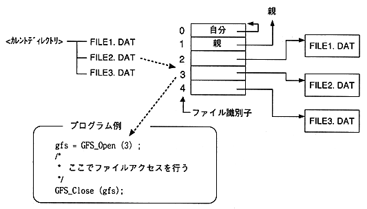

In this library, the file to be accessed is specified by the file identifier.
When accessing by file name, convert the file name to a file identifier.
The file identifier is valid for the current directory.
[Example] When accessing the following FILE2.DAT

Figure 3.1 Access by file identifier